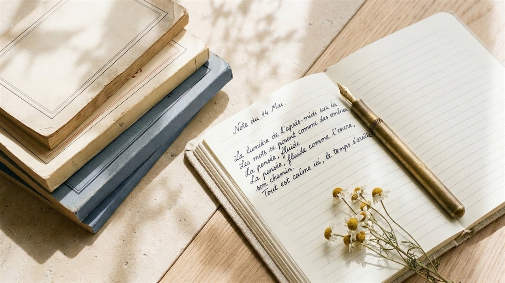

Клуб чтения · 3 мин чтения
Как читать по-французски в удовольствие, не спотыкаясь о словарь
Спокойный подход к чтению оригинальных текстов: как слышать мелодику фразы, догадываться о смысле из контекста и обсуждать прочитанное за чаем.

Клуб чтения · 3 мин чтения
Спокойный подход к чтению оригинальных текстов: как слышать мелодику фразы, догадываться о смысле из контекста и обсуждать прочитанное за чаем.
По этому запросу заметок не нашлось — попробуйте другое слово или выберите другую папку.
Живой канал школы
Новые наблюдения о языке, короткие видео и даты следующих наборов появляются там первыми.